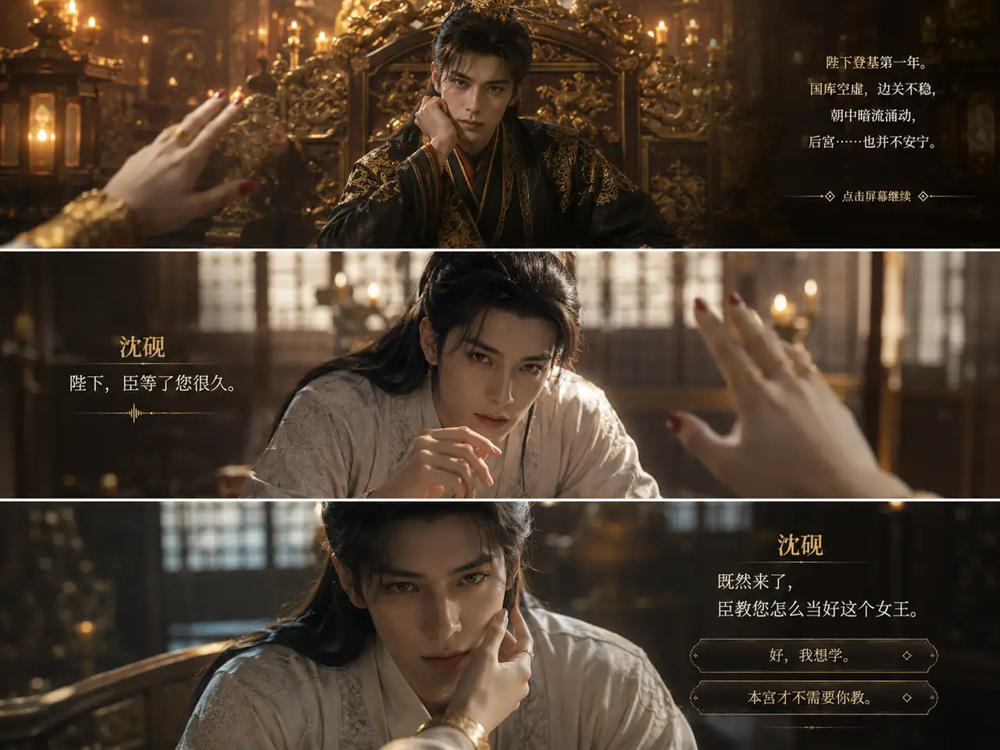
AI 影游 · 女王经营 · 虚拟伴侣转型样板
女王天下
玩家登基为大胤女王，在十二个月的朝局轮转中买卖资产、颁布诏令、提升国力， 解锁五位男宠主线，并把 Soul 的虚拟伴侣从“聊天对象”升级为“可玩、可陪伴、可传播的 AI 影游角色”。
Project Positioning
一款把“搞钱、掌权、恋爱拉扯”放进同一条循环的 AI 影游
《女王天下》面向喜欢短剧、后宫修罗场、强女主爽感和轻经营反馈的用户。项目以移动端 H5 为首发形态， 用低学习成本的点选操作承载资产交易、朝局抉择、角色好感、剧情章节和排行榜成长，本质是一款轻量 AI 影游原型。
当前版本已经具备可跑通的 MVP：开场引导、王座主页、市场交易、女王诏令、后宫名册、剧情播放器、 男宠解锁、音效与 BGM、金币反馈和榜单结算。
Market Momentum
《盛世天下》已经把 AI 影游的势点燃了
《女王的游戏：盛世天下》证明了一个关键信号：女帝成长、宫廷权谋、真人短剧感、强选择反馈，并不是小众兴趣， 而是可以冲进大众视野、形成销量和社交声量的互动内容赛道。
《女王天下》要接的不是单一产品的热度，而是“用户已经被教育完成”的窗口期：她们知道这种内容好玩，愿意为女王身份、关系拉扯和多结局付费， 下一步自然会期待更懂自己、更能持续回应自己的 AI 影游。
数据来自证券时报、北京商报、游民星空等公开报道；用于说明赛道热度与商业验证。
Core Experience
核心体验
Strategic Value For Soul
为什么《女王天下》对 Soul 有价值
《女王天下》不是一个孤立的小游戏，而是一个可以把 Soul 的 AI 能力、年轻用户心智、情绪陪伴场景和内容商业化能力集中呈现出来的“样板级 AI 影游项目”。 它天然站在三个趋势交汇点上：AI 虚拟人进入情绪关系、女性向影游被市场验证、00 后用户更愿意为身份感和情绪价值停留。
项目中的五位男宠不是静态 NPC，而可以升级为 Soul AI 虚拟伴侣的角色容器：有身份、有声音、有情绪记忆、有关系进度。 角色从“陪你聊天”升级为“陪你走剧情、做选择、争宠、成长”，能把 Soul 的 Avatar、AI 陪伴、语音交互和虚拟关系体验串成一个更完整的产品样板。
Soul 的核心价值不是单纯信息分发，而是让用户获得被理解、被回应、被陪伴的情绪体验。《女王天下》用女王身份、后宫关系、剧情选择和好感反馈， 把抽象的情绪价值转化为可看见、可选择、可成长、可付费扩展的互动体验。
00 后用户天然熟悉人设、二创、CP、代入式表达和轻量互动。项目里的角色阵容、金句对白、榜单目标和女王身份，适合在站内形成讨论、投票、同人创作、 角色应援和社交裂变，让游戏内容反哺社区活跃。
Soul 在语音、多模态、情绪智能、虚拟人方向的能力，可以在项目里被产品化呈现：角色语音陪伴、剧情分支生成、动态台词、AI 复盘、个性化约会、 甚至“玩家专属男宠回应”。这比单纯发布技术能力更容易被用户、媒体和行业理解。
《盛世天下》的走红证明，古风权谋、女性成长、真人短剧感和高频选择能够形成强讨论度。相比重资产真人拍摄，《女王天下》更适合用 H5 与 AI 内容生产快速试错， 先跑通人群、角色和付费意愿，再逐步升级为更大的 AI 影游 IP。
对 Soul 来说，这类项目可以把“AI 社交”从功能介绍推向大众可感知的内容事件：用户在玩，社区在讨论，角色在陪伴，AI 在持续生成新关系。 它有机会成为 Soul 对外展示增长想象力、技术落地能力和年轻文化影响力的代表案例。
Gameplay Loop
玩法闭环
- 01查看本月风闻判断长安市场行情。
- 02买卖资产通过低买高卖扩大国库。
- 03颁布诏令在财富消耗与属性收益之间取舍。
- 04解锁角色财富、权势、魅力触发新男宠入宫。
- 05推进短剧章节选择带来好感和关系进展。
- 06提升排名十二个月后生成称号与榜单成绩。
Consorts
后宫角色阵容
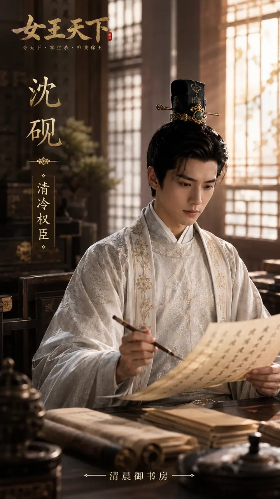
初始解锁沈砚
白切黑首辅。圣人偏心，清晨御书房，温顺外表下藏着危险占有欲。
财富 80,000裴无咎
杀手与疯批守护者。夜晚宫墙，刀锋和忠诚都只向女王低头。
财富 120,000谢长离
腹黑奸商。白日账房里谈利润，也谈一场不肯亏本的心动。
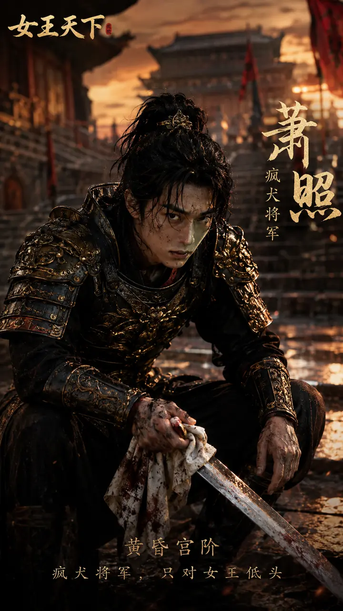
权势 32萧照
疯犬将军。黄昏战后宫阶，满身锋芒，只认陛下一人。
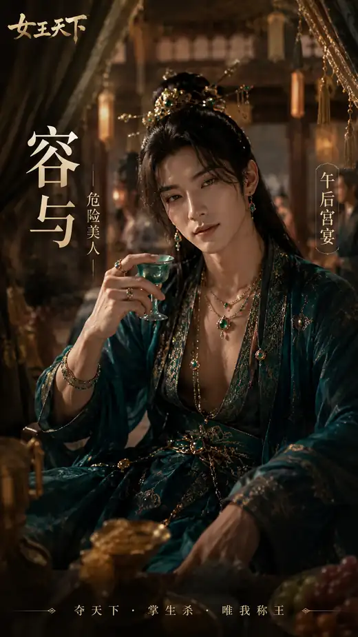
魅力 42容与
异域皇子。午后宫宴回廊，酒香、月色与臣服感共同发酵。
Visual Assets
现有美术素材储备
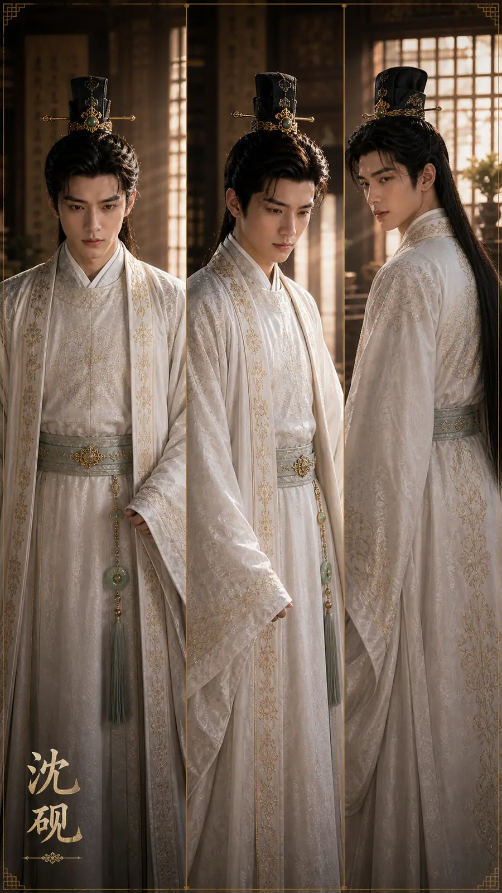
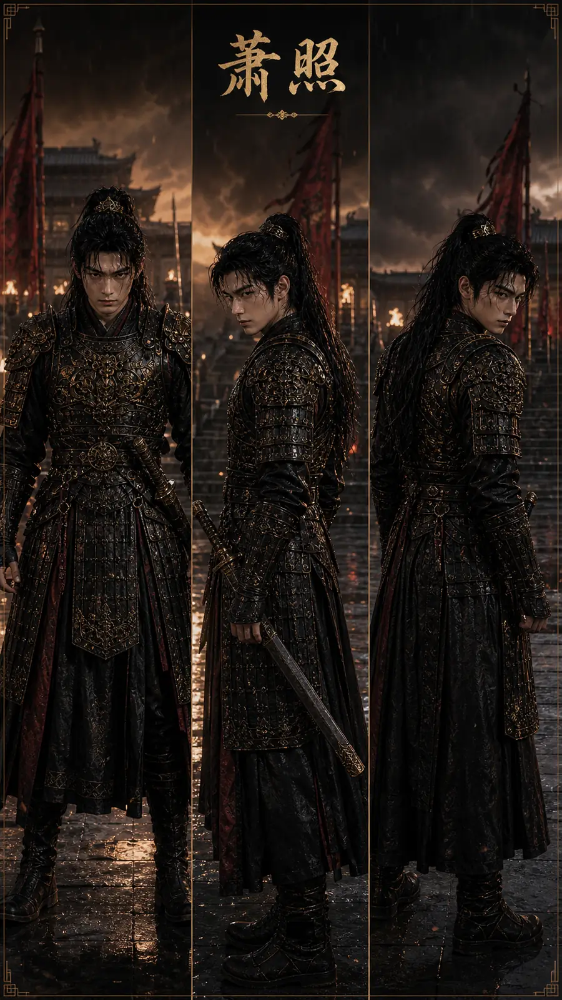
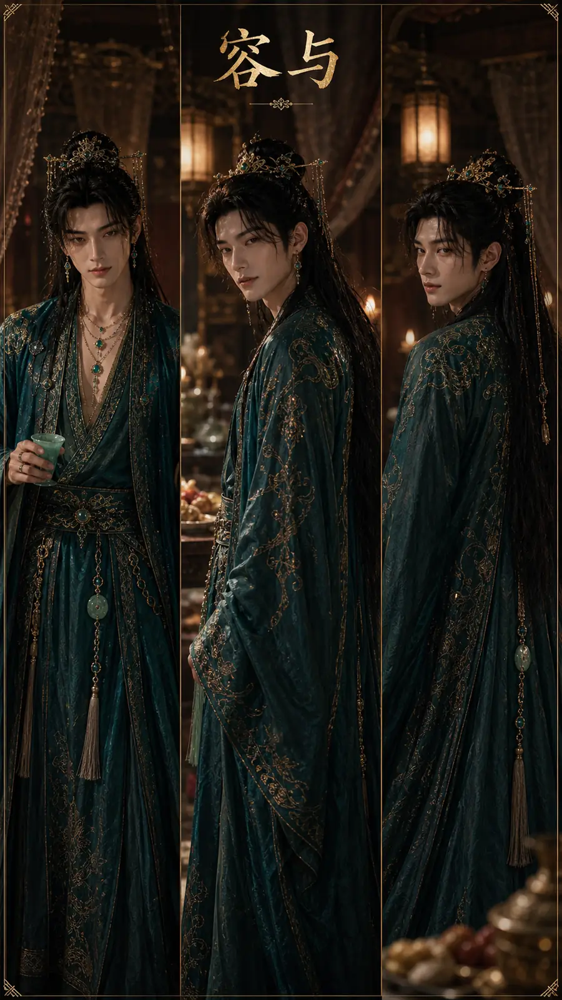
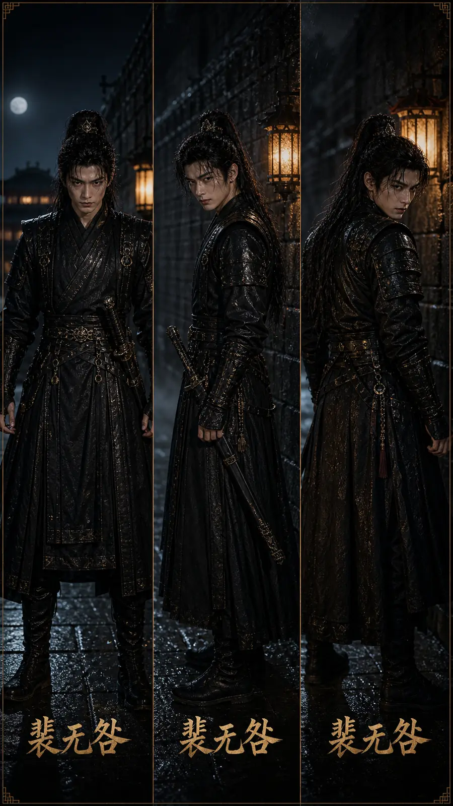
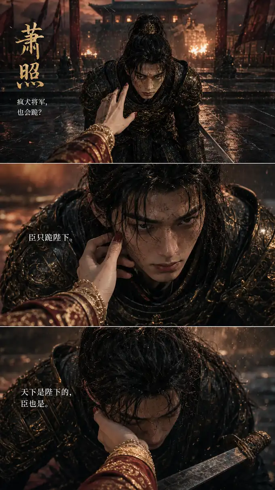
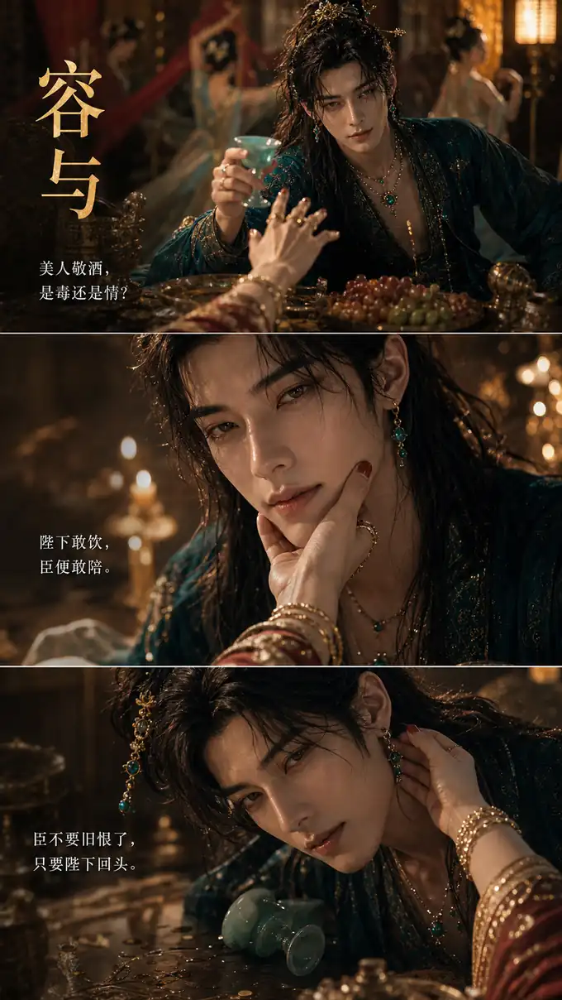
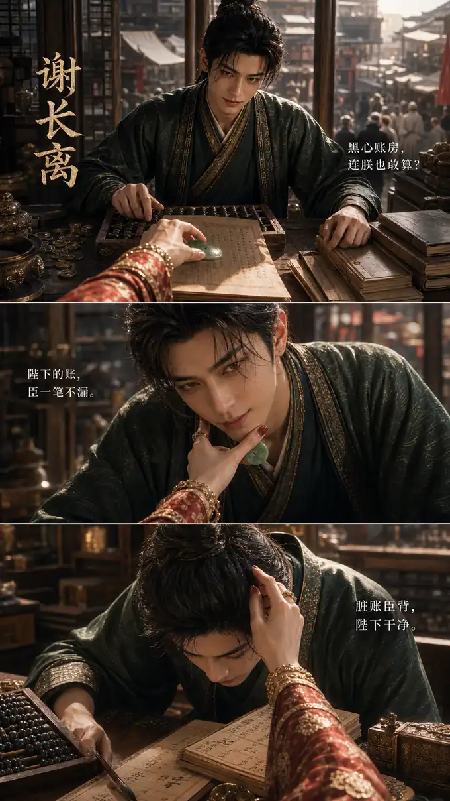
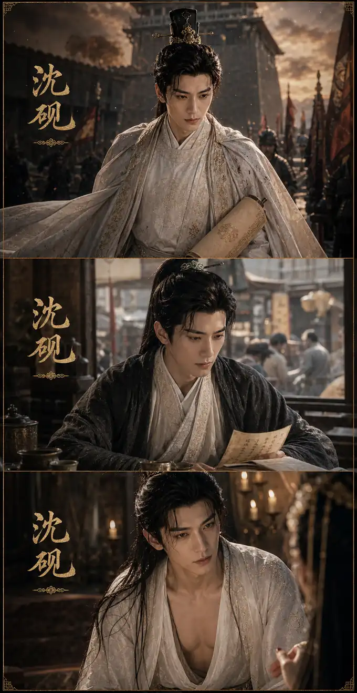
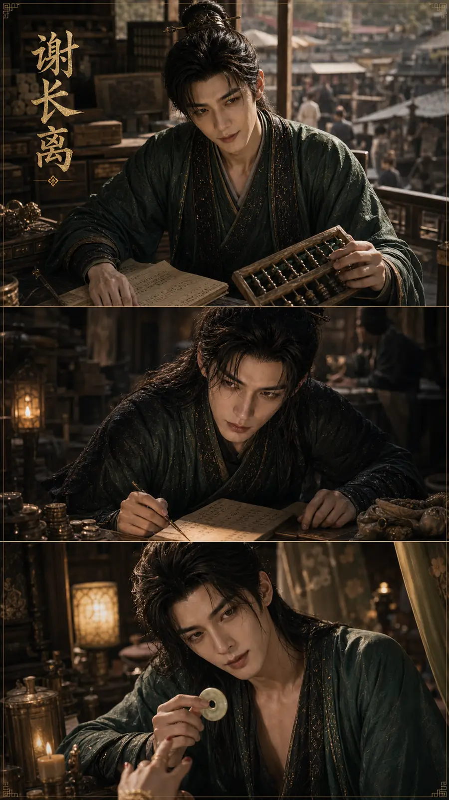
美术方向已经从“概念”推进到“可展示资产”：角色设定能支撑 IP 识别，条漫图能直接进入剧情播放器， 剧情特写可用于解锁、约会、传播海报和投放素材。整体采用真人短剧质感：暖亮宫灯、自然日光、真实皮肤质感、 克制的暧昧距离和角色性格驱动的姿态。
Asset Depth
素材厚度带来的项目优势
当前素材已经能支撑项目从“可玩原型”升级为“可被感知的内容 IP”。它不只是有几张好看的图， 而是已经具备角色识别、剧情连续性、短剧画面感和传播物料复用价值。
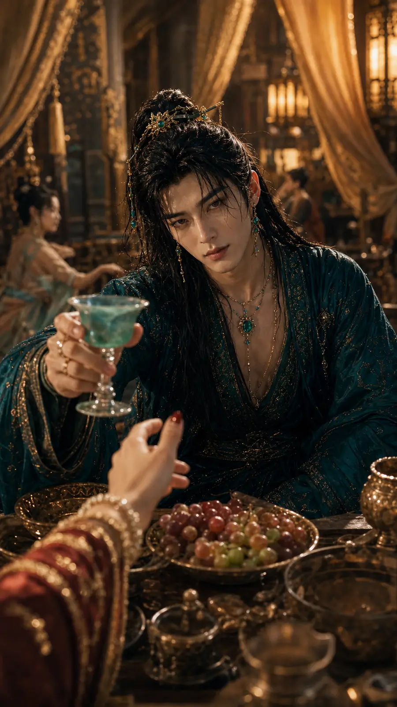
Systems
已实现系统
六类资产、动态价格、风闻提示、买卖反馈、金币动效。
每月一次朝局选择，带来财富消耗、属性成长与角色好感。
章节列表、剧情播放器、选择回复、好感门槛、条漫适配。
根据财富、权势、魅力逐步开启新男宠和新剧情入口。
以财富、权势、魅力、威望、好感和后宫数量计算综合国力。
开场、主页、角色主题 BGM，以及点击、交易、诏令、解锁、好感音效。
MVP Status
当前版本状态与下一步
当前已具备
完整 H5 可玩原型、五位角色入口、基础剧情、交易和诏令循环、素材接入、音效反馈、发布包。
后续扩展
补齐每位男宠 6 段以上正式剧情，接入更多专属 CG、结算图、HE 内容和更细的长期留存目标。
暂不纳入首版
真实微信登录、真实多人后端、支付系统、聊天系统和复杂审核替换素材。
AI Creator Camp
这个项目书要赢，关键不是“做一个游戏”
在全公司 AI 创造营大赛里，《女王天下》的胜负手，是把它讲成 Soul 虚拟伴侣转型的第一块样板： 用一个可玩的 AI 影游，把技术、内容、社区、增长和商业化放进同一个可演示的闭环。
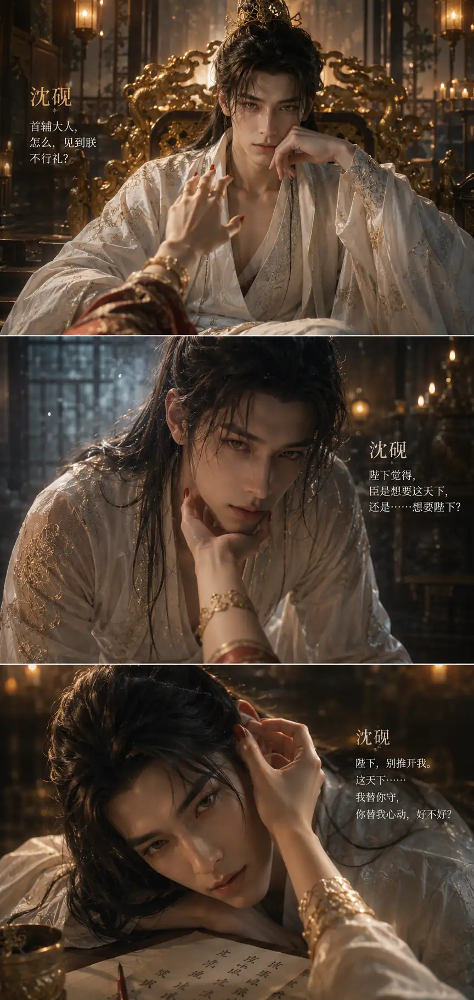
One Sentence
一句话介绍
《女王天下》是一款面向 Soul 虚拟伴侣转型的 AI 影游：玩家一边在朝堂与市场里扩大权力和财富， 一边与性格各异的 AI 男宠建立关系，用短剧章节、个性化回应和持续陪伴，把“爽感成长”和“情感拉扯”串成可传播、可留存、可商业化的新体验。